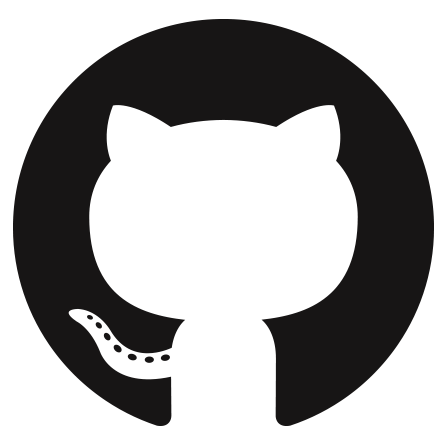
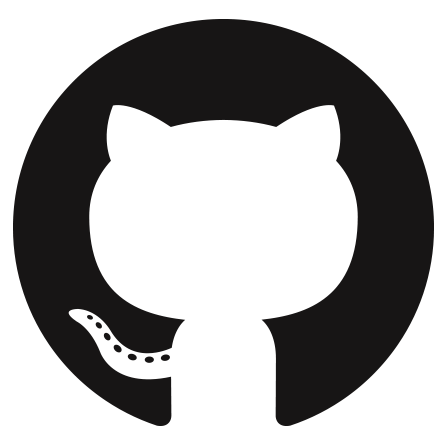
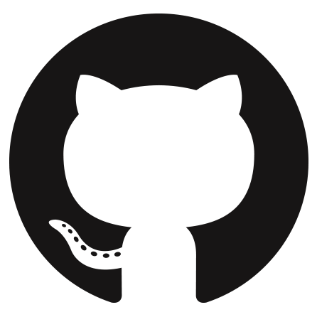

Shreyas Guduri
The Sparks Foundation
Task #3 - Payment Gateway Integration
shreyasguduri7@gmail.com
 

Shreyas Guduri NGO is a youth led organization working on empowering the underprivileged section of our society. Shreyas Guduri NGO has a pan India presence through its wide network of Volunteer Chapters across the country. Shreyas Guduri NGO focused its interventions on issues concerning youth and children which brought about significant changes in their lives in terms of education, health, skill, career and sustainable livelihood. Shreyas Guduri NGO also works on Environment conservation, women empowerment, Food safety and security. Being an organisation who cares for society, Shreyas Guduri NGO gets engaged in projects as the situation demands under natural or manmade disasters, like COVID-19 Pandemic, Flood, Drought Relief etc.
Shreyas Guduri NGO envisions shaping up of a healthy, happy and progressive society where every citizen’s lives with dignity and gets equal opportunities.
Shreyas Guduri NGO is committed to empower the underprivileged section of our society by creating an enabling environment through Encouragement, Education and Employment so that citizens can harness their full potential and live happy and healthy lives with dignity and contribute positively to society. Shreyas Guduri NGO is working towards shaping up a society which is sustainable for future generations by working on environment conservation and introducing values in society.
The Sparks Foundation
Task #3 - Payment Gateway Integration
shreyasguduri7@gmail.com
